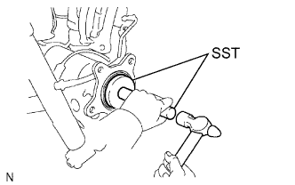

ВАЛ ЗАДНЕЙ ПОЛУОСИ > УСТАНОВКА |
| 1. УСТАНОВИТЕ САЛЬНИК ВАЛА ЛЕВОЙ ЗАДНЕЙ ПОЛУОСИ |
|  |
С помощью SST и молотка установите новый сальник вала полуоси.
| 2. УСТАНОВИТЕ ВАЛ ЛЕВОЙ ЗАДНЕЙ ПОЛУОСИ С ПЛАСТИНОЙ СТОЯНОЧНОГО ТОРМОЗА |
Установите новое кольцевое уплотнение на кожух полуоси.
Установите вал задней полуоси с пластиной стояночного тормоза и закрепите 4 гайками.
| 3. УСТАНОВИТЕ СТОЯНОЧНЫЙ ТОРМОЗ В СБОРЕ |
Установите стояночный тормоз в сборе (Нажмите здесь).
| 4. УСТАНОВИТЕ ЗАДНИЙ ЛЕВЫЙ ДАТЧИК ЧАСТОТЫ ВРАЩЕНИЯ |
Закрепите датчик частоты вращения гайкой.
Подсоедините разъем датчика частоты вращения.
| 5. ПОДСОЕДИНИТЕ ЗАДНИЙ ЛЕВЫЙ ГИБКИЙ ШЛАНГ |
Подсоедините задний гибкий шланг в месте соединения с трубопроводом тормозной системы, а затем установите новый фиксатор.
С помощью разрезной головки подсоедините трубопровод тормозной системы к заднему гибкому шлангу, удерживая задний гибкий шланг гаечным ключом.
Закрепите задний гибкий шланг и новую прокладку на колесном тормозном цилиндре заднего дискового тормоза с помощью пустотелого соединительного болта-штуцера.
| 6. ЗАЛЕЙТЕ ТОРМОЗНУЮ ЖИДКОСТЬ В БАЧОК |
| 7. УДАЛИТЕ ВОЗДУХ ИЗ ТРУБОПРОВОДА ТОРМОЗНОЙ СИСТЕМЫ |
Для моделей с гидравлическим усилителем тормозной системы:
Прокачайте трубопровод тормозной системы (Нажмите здесь).
Для вакуумного усилителя тормозной системы:
Прокачайте трубопровод тормозной системы (Нажмите здесь).
| 8. ПРОВЕРЬТЕ УРОВЕНЬ ТОРМОЗНОЙ ЖИДКОСТИ В БАЧКЕ |
Для моделей с гидравлическим усилителем тормозной системы:
Проверьте уровень тормозной жидкости в бачке (Нажмите здесь).
Для вакуумного усилителя тормозной системы:
Проверьте уровень тормозной жидкости в бачке (Нажмите здесь).
| 9. ПРОВЕРЬТЕ, НЕТ ЛИ УТЕЧКИ ТОРМОЗНОЙ ЖИДКОСТИ |
| 10. ПОДСОЕДИНИТЕ ПРОВОД К ОТРИЦАТЕЛЬНОМУ ВЫВОДУ АККУМУЛЯТОРНОЙ БАТАРЕИ |
| 11. УСТАНОВИТЕ ЗАДНЕЕ КОЛЕСО |
| 12. ПРОВЕРЬТЕ ХОД ПЕДАЛИ СТОЯНОЧНОГО ТОРМОЗА |
Полностью поднимите рычаг стояночного тормоза, чтобы включить стояночный тормоз.
Опустите рычаг, чтобы отпустить стояночный тормоз.
Медленно до упора затяните рычаг стояночного тормоза и подсчитайте число щелчков.
| 13. ПРОВЕРЬТЕ СИГНАЛ ДАТЧИКА ЧАСТОТЫ ВРАЩЕНИЯ |
Проверьте сигнал датчика частоты вращения (Нажмите здесь).